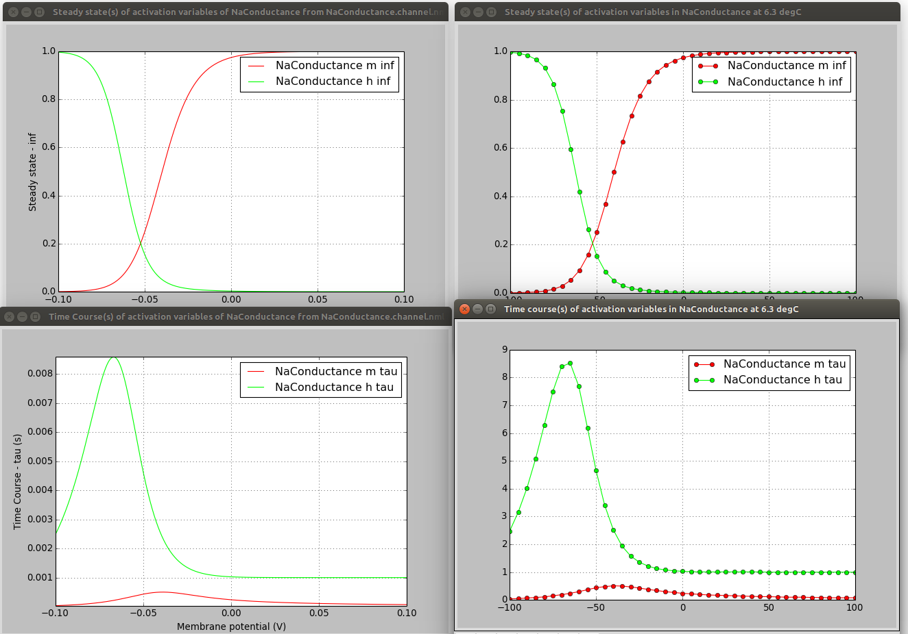
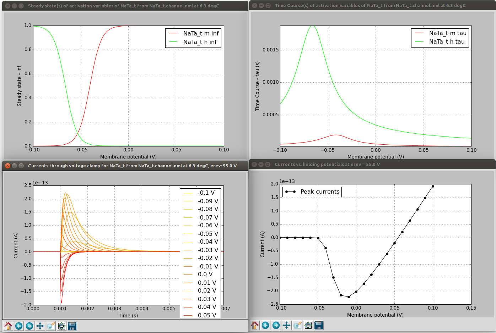

Visualising and analysing ion channel models
Contents
Visualising and analysing ion channel models#
A core part of NeuroML is the ability to specify voltage dependent (and potentially concentration dependent) membrane conductances, which are due to ion channels.
Help converting/examining channels in NeuroML#
Converting your own ion channel models to NeuroML is facilitated by examples (e.g. a simple HH Na+ channel) and the specification documentation (e.g. for <ionChannelHH>, <gateHHrates>, <HHExpLinearRate>, but there are also a number of software tools which can be used to view the internal properties of the ion channels, as well as their behaviour.
Converting cell models to NeuroML
Note: there is a full guide to Converting cell models to NeuroML and sharing them on Open Source Brain which uses some of the tools and methods below.
1) Use jnml -info (note not in pynml yet…)#
jNeuroML can be used on channel files for a quick summary of the contents.
> jnml NaConductance.channel.nml -info
jNeuroML v0.12.0
Information on contents of NeuroML 2 file
Ion Channel NaConductance:
ID: NaConductance
Description: HH Na Channel
Gates:
gate m:
instances: 3
forward rate: 1e3 * (v - (-0.04))/0.01 / ( 1 - exp(-(v - (-0.04)) / 0.01))
reverse rate: 4e3 * exp((v - (-0.065))/-0.018)
gate h:
instances: 1
forward rate: 70 * exp((v - (-0.065))/-0.02)
reverse rate: 1e3 /(1 + exp((v - (-0.035))/0.01))
2) Use pynml-channelanalysis in pyNeuroML#
pyNeuroML comes with 2 utilities which help enable examination of the properties of ion channels, both based on NeuroML and NEURON mod files.
pynml-channelanalysis NaConductance.channel.nml # Analyse a NeuroML 2 channel
pynml-modchananalysis NaConductance # Analyse a NEURON channel e.g. from NaConductance.mod

pynml-channelanalysis includes a number of options for generating graphs of channel activity under different conditions (see here for details).
pynml-channelanalysis NaTa_t.channel.nml -erev 55 -stepTargetVoltage 10 -clampDuration 5 -i -duration 7 -clampDelay 1

3) Load cell model on to OSBv1 & analyse the channels…#

4) Export to one of the supported simulators#
Exporting to Neuron say (jnml LEMS_NML2_Ex5_DetCell.xml -neuron) will produce mod files with the “flattened” equations:
...
DERIVATIVE states {
rates()
m_q' = rate_m_q
h_q' = rate_h_q
}
PROCEDURE rates() {
m_forwardRate_x = (v - m_forwardRate_midpoint ) / m_forwardRate_scale ? evaluable
if (m_forwardRate_x != 0) {
m_forwardRate_r = m_forwardRate_rate * m_forwardRate_x / (1 - exp(0 - m_forwardRate_x )) ? evaluable cdv
} else if (m_forwardRate_x == 0) {
m_forwardRate_r = m_forwardRate_rate ? evaluable cdv
}
...
Exporting to Brian 2 (jnml LEMS_NML2_Ex5_DetCell.xml -brian2) will also produce a large file with the explicit expressions…
...
hhcell_eqs=Equations('''
dbioPhys1_membraneProperties_NaConductances_NaConductance_m_q/dt = ((bioPhys1_membraneProperties_NaConductances_NaConductance_m_inf - bioPhys1_membraneProperties_NaConductances_NaConductance_m_q) / bioPhys1_membraneProperties_NaConductances_NaConductance_m_tau) : 1
dbioPhys1_membraneProperties_NaConductances_NaConductance_h_q/dt = ((bioPhys1_membraneProperties_NaConductances_NaConductance_h_inf - bioPhys1_membraneProperties_NaConductances_NaConductance_h_q) / bioPhys1_membraneProperties_NaConductances_NaConductance_h_tau) : 1
dbioPhys1_membraneProperties_KConductances_KConductance_n_q/dt = ((bioPhys1_membraneProperties_KConductances_KConductance_n_inf - bioPhys1_membraneProperties_KConductances_KConductance_n_q) / bioPhys1_membraneProperties_KConductances_KConductance_n_tau) : 1
dv/dt = ((iChannels + iSyn) / totCap) : volt
morph1_0_LEN = 1.0 * meter : meter
...
bioPhys1_membraneProperties_KConductances_erev = -0.077 * volt : volt
bioPhys1_membraneProperties_KConductances_condDensity = 360.0 * kilogram**-1 * meter**-4 * second**3 * amp**2 : kilogram**-1 * meter**-4 * second**3 * amp**2
bioPhys1_membraneProperties_KConductances_KConductance_conductance = 1.0E-11 * siemens : siemens
bioPhys1_membraneProperties_KConductances_KConductance_n_instances = 4.0: 1
bioPhys1_membraneProperties_KConductances_KConductance_n_forwardRate_rate = 100.0 * second**-1 : second**-1
bioPhys1_membraneProperties_KConductances_KConductance_n_forwardRate_midpoint = -0.055 * volt : volt
bioPhys1_membraneProperties_KConductances_KConductance_n_forwardRate_scale = 0.01 * volt : volt
bioPhys1_membraneProperties_KConductances_KConductance_n_reverseRate_rate = 125.0 * second**-1 : second**-1
bioPhys1_membraneProperties_KConductances_KConductance_n_reverseRate_midpoint = -0.065 * volt : volt
bioPhys1_membraneProperties_KConductances_KConductance_n_reverseRate_scale = -0.08 * volt : volt
Both very verbose, but it’s possible to see at least what explicit expressions are being used for the channels…